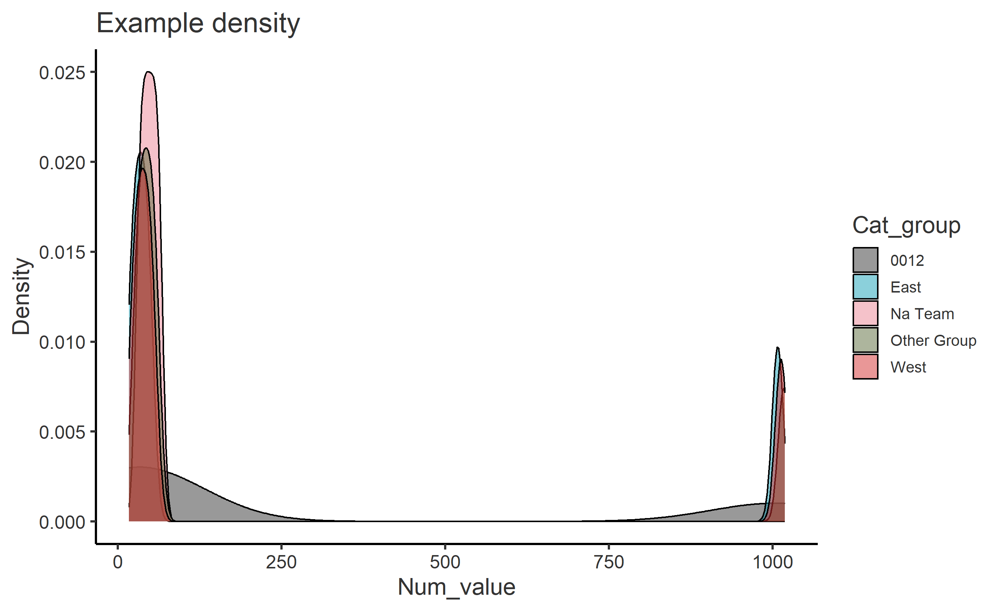

Guide 02 / 03
Statistics guide
Know what each view calculates.
Definitions, populations and limitations, with worked examples from the verified app exports.
Reviewed 23 September 2026 · Column review board & readable R exports
Choose a statistic that fits the question
These are descriptive analyses of the rows supplied. They do not establish causation, correct a biased sample, account for repeated observations, or perform significance tests. The app has no weighting control and does not display standard errors, confidence intervals or regression p-values.
| Quantity | Interpretation | Useful when |
|---|---|---|
| Count / frequency | Number of included rows in a cell. | You need volume and the data has a well-defined unit of observation. |
| Percentage | 100 × category count / the relevant row total. | You need composition within a period or group; show the denominator too. |
| Arithmetic mean | Sum of eligible values / number of non-missing eligible values. | Values have meaningful numeric spacing and extremes are relevant to the average. |
| Median | Middle of sorted values; the mean of the two middle values for an even number. | You want a typical value less affected by a few extremes. |
| 20% trimmed mean | Average after removing the lowest and highest 20% of values separately. | You want a centre less affected by extremes, while retaining more information than the median. |
| Kernel density | A smoothed distribution shape; each group's curve integrates to one. | You want to compare spread, skewness and possible multiple peaks. |
| Fitted scatter line | A separate straight-line fit of y on x within each group. | You want to inspect an association alongside the individual observations. |
Do not average category identifiers. For ordinal ratings, check that treating steps as equally spaced is defensible, and compare the distribution or median. When comparing two outputs, first check that they use the same rows and the same statistic.
Counts, percentages and denominators
Frequencies is a cross-tabulation of the selected time and categorical fields. Missing values in either field are omitted by its counting method. Factor levels can appear as zero-count combinations. A repeated person or event is counted again unless the input has already been deduplicated.
Percentages · 1 Group calculates each category's share within a time row. Percentages · 2 Groups calculates the second category's share within each combination of time and the first grouping category. These are row percentages, not shares of the whole dataset.
| Within one period and group | Count | Row percentage |
|---|---|---|
| Category A | 30 | 30 / 40 × 100 = 75% |
| Category B | 10 | 10 / 40 × 100 = 25% |
Do not average percentages from different-sized groups as if their denominators were equal. Combine the counts and divide by the combined denominator when the populations are comparable and non-overlapping.
The percentage helpers can retain missing categories as NA-labelled rows or columns, unlike Frequencies. They complete missing combinations with zero counts. The one-group percentage table reports zero percentages for empty completed rows; the two-group version can retain NaN from a zero denominator. An empty row is no evidence of a true zero population share.
Percentage areas count rows within each Year_Quarter after removing missing groups and the NA/Other labels described below. Their n is the period total repeated for each category, so do not sum it across categories. Displayed percentages are rounded to two decimals and may total 99.99 or 100.01.
Means, medians and trimmed means
The Averages tables calculate the arithmetic mean, median, Trimmed.Mean.20 and n() by time, optionally split by another category. Missing measurements are removed when calculating these statistics. Ordinary uploaded measurements are first filtered to values different from zero; negative values remain.
For a 20% trimmed mean, sort the non-missing eligible measurements, remove floor(0.2 × n) observations from each end, and average what remains. With fewer than five eligible values, no observations are removed. This is trimming of observations, not replacing extremes with cutoff values.
Why 226 and 36 are both correct
The verified March sample is 16, 26, 36, 46, 1006.
- Arithmetic mean: 1130 / 5 = 226.
- Median: the middle value is 36.
- 20% trimmed mean: remove 16 and 1006; (26 + 36 + 46) / 3 = 36.
- The displayed row count remains 5, even though the trimmed mean uses three values.
An extreme value may be a valid observation. A trimmed mean changes the quantity being summarised; it does not prove the removed values were erroneous. Compare the ordinary mean and distribution before choosing what to report.
Most summaries round numeric results to two decimals. Counts describe rows after the view's initial filters, before trimming; in legacy exceptions that retain missing measurements, n() can exceed the number used by a mean. Missing-value handling for medians also differs between those exceptional paths.
Definitions: R mean() and R median(). The eligibility rules below come from this repository, not from statistical requirements.
Which rows each view uses
This table describes the current implementation for ordinary uploaded measurements. A row's eligibility in one view does not imply eligibility in another.
| View | Measurement rule | Grouping / time rule |
|---|---|---|
| Frequencies | No numeric measurement needed. | Current Home population; missing time or category omitted. |
| Percentage tables | No numeric measurement needed. | Current Home population; counts by time and category; missing labels can be represented. |
| Averages tables | Exclude zero and missing values; keep negatives. | Current Home population; no NA/Other substring exclusion for grouping labels. |
| Single line | Positive measurements; 20% trimmed mean. | By selected time; may add the full mapped population for comparison. |
| Grouped lines | Positive measurements; 20% trimmed mean. | Remove missing groups and NA/Other labels from group series. All uses the full mapped population, including those labels. |
| All bar types | Positive measurements; ordinary mean. | Final ordered period; remove missing groups and NA/Other labels from each selected grouping field. |
| Stacked areas | Positive measurements; ordinary mean. | By Year_Quarter; remove missing groups and NA/Other labels. |
| Percentage areas | No numeric eligibility filter. | By Year_Quarter; remove missing groups and NA/Other labels before calculating shares. |
| Scatterplots | Keep complete x/y pairs, including zero and negative values. | Remove missing groups; keep NA/Other text labels; sample at most 1,000 rows. |
| Density | Positive measurements, then pooled 5th–95th percentile trimming. | Selected financial year, complete group/value pairs; keep NA/Other text labels. |
NA/Other is a broad substring rule. A case-insensitive match anywhere in a label removes it from the affected views. It can therefore remove a genuine label such as “Canada”, as well as “Other group” or “NA team”. This rule is documented here so it can be evaluated; it is not a recommendation for cleaning categories.
Legacy measurement-name exceptions are case-sensitive. Single lines retain non-positive values for the exact name Num_Surplus; several other helpers use the exact name Surplus. Current mapping normally creates names such as Num_surplus, so naming an uploaded column “Surplus” does not reliably activate an exception. Compare the code and exported settings before using these paths.
Read line charts and their All comparison
Both line views display a 20% trimmed mean, even though the result column is called Mean. The single-line view is by time only. It adds Filtered and All series when the numbers of eligible rows in the filtered and full mapped datasets differ; it does not compare the row identities.
The grouped-line view calculates one series per retained group in the Home population and always adds an All series from the full mapped dataset. All is an independently calculated trimmed mean over its eligible rows, not the average of the visible group means. A genuine category named “All” can collide with that comparison label.
Month and Financial_Quarter combine matching periods across years. For example, April 2024 and April 2025 contribute to the same Month group unless the Home population is restricted. The April–March ordering is a seasonal sequence, not a chronological multi-year time series.
Read bars and areas
Simple and grouped bars compare arithmetic means. The current period rule takes the final factor level: March for Month and Q4 for Financial_Quarter. It does not search for the most recent period with data. If that level has no eligible observations, the result can be empty.
Stacked bars and stacked areas add subgroup means visually. Their top edge is a sum of means, not a sum of raw measurements or a pooled mean. If groups have different sizes, those are especially different quantities. Use grouped bars or lines when the question is a comparison of group means rather than their sum.
Percentage areas show group shares of row counts within each calendar quarter. They do not show the shares of a monetary amount or any other numeric measurement. A larger area band can result from changes in either the numerator or the other groups in its denominator.
Exported stacked-area scripts complete absent group/period combinations with display zeros to draw the stack. Their saved analysis CSV preserves the observed summaries. A display zero is not a measured zero. Lines and filled areas between observed periods are visual connections, not estimated observations or forecasts.
Changing y-axis limits zooms the view. It does not recalculate means, remove rows from the underlying summary, or make scales comparable across separate figures. Use consistent scales when making visual comparisons.
Read scatterplots and fitted lines
Each point is a complete x/y observation coloured by group. If there are more than 1,000 complete rows, the app samples 1,000 without replacement before plotting. The fitted line therefore also uses that sample. The live app does not fix the sample seed; the exported script sets seed 42 for repeatable results.
The dashed line is an ordinary least-squares fit of y on x within each group. It describes an association and is not evidence that x causes y. The graph hides confidence bands and does not report coefficients, p-values or model diagnostics.
Check for non-linearity, outliers, small groups and repeated observations. A nearly constant x or very small group may not support a useful line. Perform a separate model assessment if you need inference, prediction or adjustment for other variables.
Method reference: ggplot2 geom_smooth(). The sample limit and fixed export seed are application choices.
Read density plots and percentile trimming
Select one Financial_Year, a grouping column and a measurement. The app removes missing group/value pairs, applies the measurement rule, calculates the 5th and 95th percentiles across all eligible groups together, then retains values between those cutoffs inclusive. It uses R's default quantile method, type 7.
The trimmed rows feed one kernel density curve per group. Each curve has area one: a taller peak means values are more concentrated near that location, not that the group has more observations. The bandwidth controls smoothing, and the curve can extend beyond the observed range.
The percentile cuts are pooled, so different groups can lose different proportions of their rows. Ties at the cutoffs can change the fraction retained, and some large values can remain. Do not assume this removes exactly 10% of every group or eliminates every outlier.

Method references: R quantile() and ggplot2 geom_density().
Known limitations to consider
| Issue | What it affects | Practical response |
|---|---|---|
| Legacy Year conversion | The percentage-area helper's Year path calculates integer Year + 2018. A modern 2024 value becomes 4042. Export tests preserve this legacy behaviour. | The current area UI offers only Year_Quarter. Do not expose or reuse the Year path without correcting and testing its semantics. |
| Different exclusion rules | Zeros, negatives, missing groups and NA/Other labels are handled differently between views. | State the population and rule with a result; review the eligibility table before comparing views. |
| Final-level bars | A month or quarter label can exist as a factor level without observations. | Check the resulting table and input period coverage; do not describe it as “latest observed”. |
| Small samples | Unstable means, regressions and density estimates. n is not a measure of representativeness. | Show counts and underlying data. The count colours (≤100, 101–300, >300) are display bands only. |
| Automatic cleaning | Ambiguous dates, number formats, missing tokens and case-folded labels can change interpretation. | Inspect the mapped CSV and resolve unit or coding ambiguities before analysis. |
| Structural validation is limited | A “safe for summary” measure only needs at least one finite numeric value. That is not a complete statistical data-quality assessment. | Check the remaining values and the analysis context, especially non-finite values and invalid codes. |
This guide records the implemented methods, including their limitations. The 23 September 2026 tests verified exporter agreement with those methods; agreement is not proof that every existing method is appropriate for a new question.